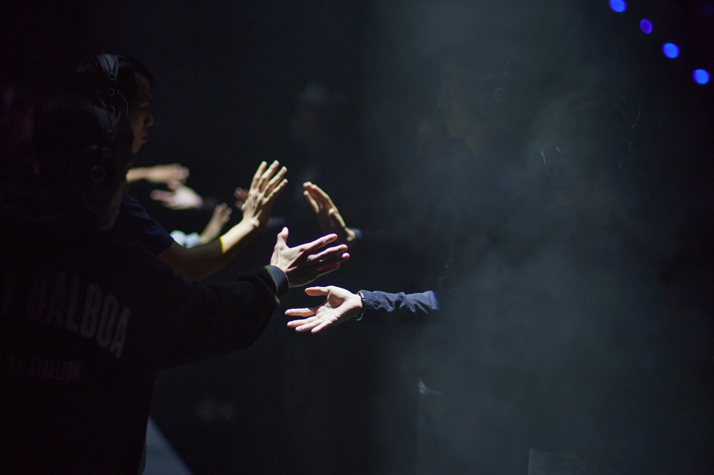

First Steps
Performance collective & Son Immersif
Mon rôle : Sound Design, Composition musicale
First Steps convoque la beauté fragile des premiers pas sur scène. Des non performeurs, guidés par des instructions transmises par un casque audio, s'aventurent à la recherche de leur danse intérieure. Au fil de leur voyage, ils vont apprivoiser la lumière, l'espace et le regard du public.
Ce spectacle veut faire vivre le frisson de la rencontre entre 5 danseurs et 24 membres du public sur scène, devant une salle de 250 spectateurs. Il est le fruit d'une collaboration inédite entre le Tamanoir Immersive Studio et le Hong Kong Art Festival.

S'adressant autant aux participants sur scène qu'aux spectateurs, la création sonore répond à deux enjeux : donner à expérimenter le son en tant que matière tangible, pouvant influencer les déplacements, les attitudes des participants dans l'espace ; créer des tableaux et des ambiances, facilitant la proximité du public avec les performeurs non initiés à la scène.
Crédits
- Écriture et mise en scène
- Sam Lecoeur
- Choréographie
- Sam Lecoeur
- Composition musicale et Sound Design
- Jean Le Bellego
- Création lumière
- Paolo Morvan
- Création lumière associé
- Mak Kwok-fai
- Danseurs
- Rex Cheng Wai-pan, Fonteyn Ho Fong-ting, RItal Lau Pak-hong, Chester Wong, Carmen Yu
- Voix Off (Anglais)
- Claire Saumande
- Voix Off (Cantonais)
- Shirley Tsoi Wan-wa
- Producteurs
- Remi Large, Michael Lee